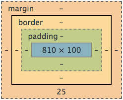
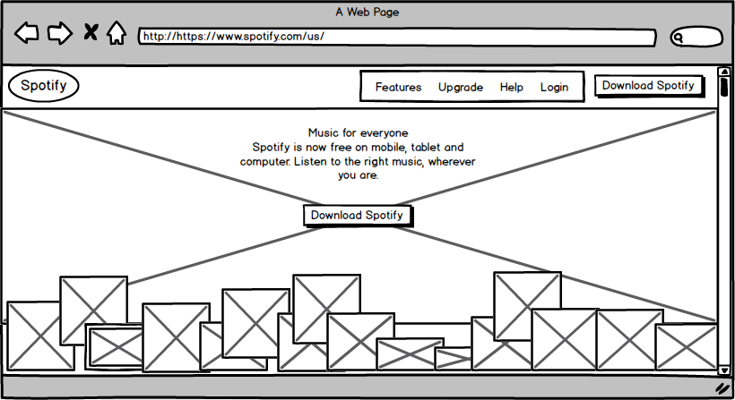
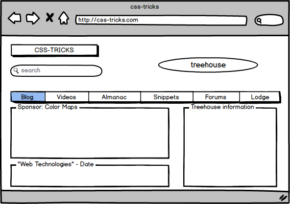
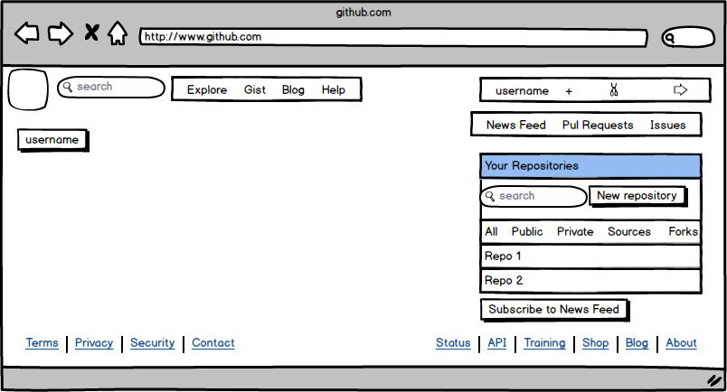

July 12.2014
JAVASCRIPT in WEB DEVELOPMENT

JavaScript is a computer language commonly used in web development. To understand JavaScript's role in the web, we must first establish a concept called client-side programming. The client is the computer that communicates with the server. You might think of the client as your laptop. Instead of only pointing to a file, the web server can run a program process the file before sending it to the client. This makes the web more dynamic. Alternatively, the client can run that program to process the file after it receives it. This client-side program is written in JavaScript. Let's look at some features and pitfalls.
We like JavaScript!
- JavaSript is fast. It executes on the client side and reduces strain on the web server and saves bandwith.
- JavaScript is compatible. It interacts with the user's web browser, so it is supported on any platform that supports that browser.
- JavaScript is easy. It uses the DOM model so it can already recognize the objects on web pages.
- JavaScript is extendible. Developers can write snippets that users can download that will interact with certain web pages and enhance functionality.
Not so fast...
- JavaSript can be dangerous. Developers can write JavaScript programs that execute on the client's computer to do something that the user did not intend. The program could attack the client's system and/or send out private information. Although browsers limit JavaScripts, capabilities, malicious developers periodically find ways to circumvent the rules.
- JavaScript can be inconsistent across browsers. Because JavaScript relies on the end user, developers cannot perfectly tailor their programs to varying browsers, settings and general environments.
July 6.2014
LEARNING CSS - PADDING, BORDER and MARGIN

The skeleton of a web site is constructed from HTML. Instead of bones, HTML defines all of its elements as boxes. Then comes CSS to flesh out the web site and make it beautiful. CSS uses the box model to wrap layers around the box defined by HTML. Each of these layers has unique properties.
Content is at the center of the box model. We can see content in blue. Content is the box that holds holds the site's text and images.
Padding creates a space around the content. Padding takes the background color defined by the content. The brown highlights that appear around the menu items on this page upon hover are created by padding.
Border surrounds the padding and content. It takes the color and design (i.e. solid, dotted, rounded corners) defined by the content. The blue underline on the header of this page is created with a border surrounding only the bottom of the header box.
Margin establishes an invisible force field around the whole package. The blank space above the navigation bar and on either side of the main content of this page are created by margins.
Note: the differences between padding, border and margin can be be unclear because they can be used interchangeably at times. For example, I could indent the title of this page "Tech" by using left margin or left padding. This is possible because there is no border around the content and we are not dealing with different background colors.
Finally, the thickness of each layer begins at the inner layer and extends outwards. When designing a web site, remember that the actual height and width of an element is the sum of the content, plus the layers added by padding, border and margin.
June 30.2014
WEBSITES - WIREFRAMED
A wireframe is a simplified blueprint of a screen design. Check out the wireframe versions of the websites I mentioned on my Technical Blog page. Click the image for a bigger version.

Spotify.com - There isn't much to read upon initial view. The home screen is to the point. It's main purpose is to draw in the viewer, as visitors of this website (as opposed to the application) are usually not yet subscribers. The huge image is followed by a potpourri of album art scattered about the bottom of the page. Because these smaller images are covered, it invites the user to scroll down: that's where the real presentation is made.

css-tricks.com - One of the most appealing things about this site is the beautiful color scheme. The wireframe takes that away from us. What we now realize is that half of the view is basically header and nav bar. There isn't much in terms of content before scrolling down to read what you came for. There is considerable space dedicated to treehouse, so it's safe to assume they're in cahootz. Nevertheless, the simplicity of this layout is appealing.

GitHub.com - I've somehow managed to make the GitHub visual experience even worse by reducing it to wireframe. See that huge gaping white space? That's what remains after closing the information boxes that used to be there upon first creating an account. Removing those boxes actually made the site easier to navigate because our eyes go straight for the good stuff, that is, our repositories. That's all we came for, I hope.
June 29.2014
WEBSITES WORTH A VISIT

Spotify.com is a music streaming site. I'm a paid subscriber and I use the app on my PC and smartphone every day. Spotify is the way to go for music because it allows you to listen to any song, album or artist on demand. Paid subscribers can download songs to their device to access when offline. Today I checked out the website as opposed to the downloaded app. As the face of the business, this is where Spotify has a chance to make a first impression in hopes of selling its service. The close-up, candid action shots convey a fun-loving attitude that isn't difficult to associate with music on the go. As an aspiring web developer, I am particularly impressed with the way the pictures scroll in tandem with text content. The foreground of text scrolls faster than the alternating photos of twenty-somethings livin' life, giving a stunning, yet humble suggestion that using Spotify is a good idea. Check out Spotify (at least the homepage)!

css-tricks.com is a great site I discovered the other day, probably in the midst of frantically tryin to coax div-a and div-b to behave with div-c. I was instantly drawn to the design of this site. The colors are very appealing and entice the viewer to stay a while and explore. Something very clever I noticed in the design of this site was that it rearranges itself to three distinct layouts as you squish the width of the browser window. I'm not talking the default automatic stuff. The navigation tabs change shape and arrangement. The brown border between each box actually disappears to allow more concise viewing at the smallest with. This is the first time I've noticed such a reactive scheme on a web page. The footer of the site discloses that it was made on WordPress. Is that cheating? Either way, this site is both useful and beautiful.

GitHub.com is an online marketplace for developers to share code. I suppose non-developers could grab some code from GitHub as well, but the site is so overwhelming, I wouldn't want to go near it if I didn't have to. As a relatively new user, GitHub is like a dark basement with a noisy furnace; I'm only going down there to get a screwdriver or change the cat's litter box, and then I'm gone. In lieu of intimidation factor, GitHub is a fantastically practical tool for web development. I've attempted to show its bright and colorful side with a screenshot of the "Explore" page, but the truth is, GitHub is not bright and colorful. It is a confusing web of oversharing. Maybe it's nothing more than my own inexperience, but when it comes to GitHub I want to git what I came for and git out. Fortunately, I'd rather interact with GitHub from the safety of my command line.